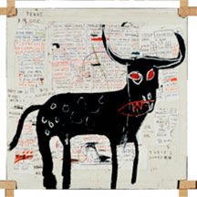
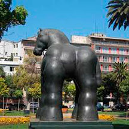
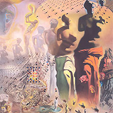
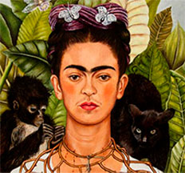
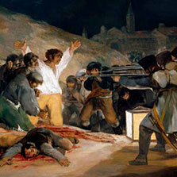
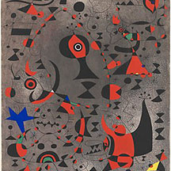
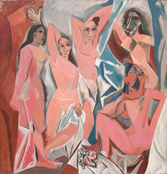
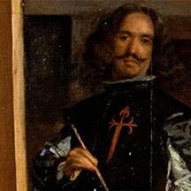

| Artworks | Artist | Dates | Origin | Style | Main Media |
|---|---|---|---|---|---|
|  | Jean-Michel Basquiat | (1960–1988) | American, Haitian/Puerto Rican decent |
Graffiti, Street Art |
Acylic, oil paint stick and spray paint on canvas; linen, metal and paper; and markers paper collage, crayon and color transfer on printed paper |
|  | Fernando Botero | (1932– ) | Columbian | Boterism | Oil paint, pastel oils, watercolors, and bronze |
|  | Salvador Dalí | (1904–1989) | Spaniard | Surrealism | Oil paint, filmmaker, photography, gold, glass, and bronze |
|  | Frida Kahlo | (1907–1954) | Mexican | Surrealism | Oil paint on canvas or masonite |
|  | Francisco Goya | (1746–1828) | Spaniard | Romantic | Oil paint, drawings, and etching |
|  | Joan Miró | (1893–1983) | Spaniard | Surrealism | Oil paint, pastels, printmaking, sculpture, ceramics, collage, muralism, and tapestry |
|  | Pablo Picasso | (1881–1973) | Spaniard | Cubism | Oil paint, collage, and enamel paint on linen canvas or wood |
|  | Diego Velásquez | (1599–1660) | Spaniard | Baroque | Oil paint |